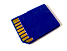
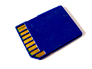

Flash-Speicher
Lukas Jung & Michael Wolz
15. November 2017
Lukas Jung & Michael Wolz
15. November 2017
 

Wieso Flash-Speicher?
Löschvorgang erinnerte Entwickler an Kamerablitz
|
VS |
|
|---|
Unterschiedliche interne Verschaltung der Speicherzellen hat Einfluss auf Speicherdichte und Zugriffsgeschwindigkeit
Reihenschaltung der Speicherzellen
Eine Reihe bildet eine Datenleitung
Sequentielles Lesen und Schreiben
Platzeffizient aber langsam
Parallelschaltung der Speicherzellen
Wahlfreier Zugriff
Bietet kurze Zugriffszeiten
Weniger kompakt
Begrenzte Lebensdauer
Lebensdauer abhängig von Zustand der Oxidschicht innerhalb der Transistoren, speziell am Floating-Gate
Asymmetrie bei Lese- und Schreiboperationen
Information wird im Floating-Gate gespeichert
Die Oxidschicht wird bei einem Löschzyklus beschädigt
Anzahl an Löschzyklen variiert stark je nach Hersteller, Technik und Strukturgröße
Fehlererkennungs- und Fehlerkorrekturcodes auf Block-Ebene
Ansteuerlogik zeigt Fehler an
Treibersoftware markiert defekte Blöcke in einer Defekttabelle
Berechnung und Steuerung der Schutzbits innerhalb der Ansteuerlogik
Gleichmäßige Verteilung der Operationen über die Treibersoftware
Verwendung von "Wear-Leveling-Algorithmen" zur gleichmäßigen Abnutzung
Varianten für Treiber- und Dateisystemebene
Nichtflüchtiges Speichermedium
Mechanische Robustheit
Geringer Energieverbrauch
Niedrige Wärmeentwicklung
Geräuschlos
Geschwindigkeit
Langsamer als nicht-flüchtiger Speicher
NAND ist kompakt, aber langsam
NOR ist nur im Schreiben langsam, aber groß
Kosten
Fehleranfälligkeit